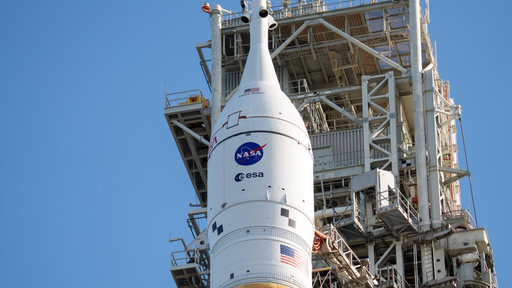
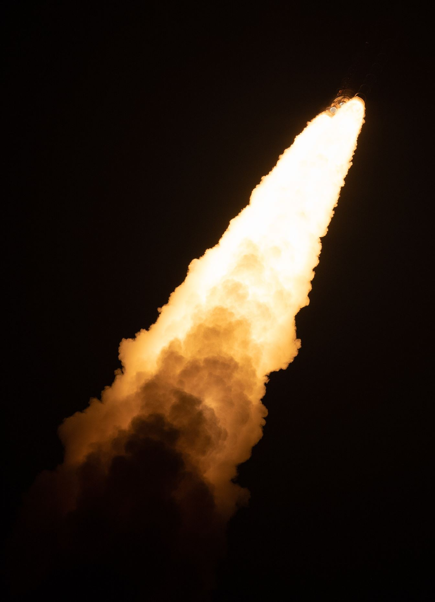
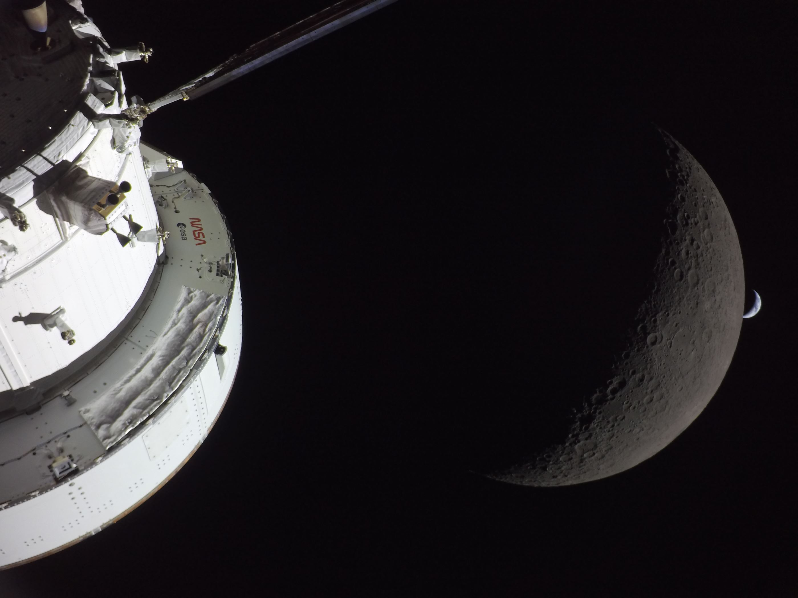
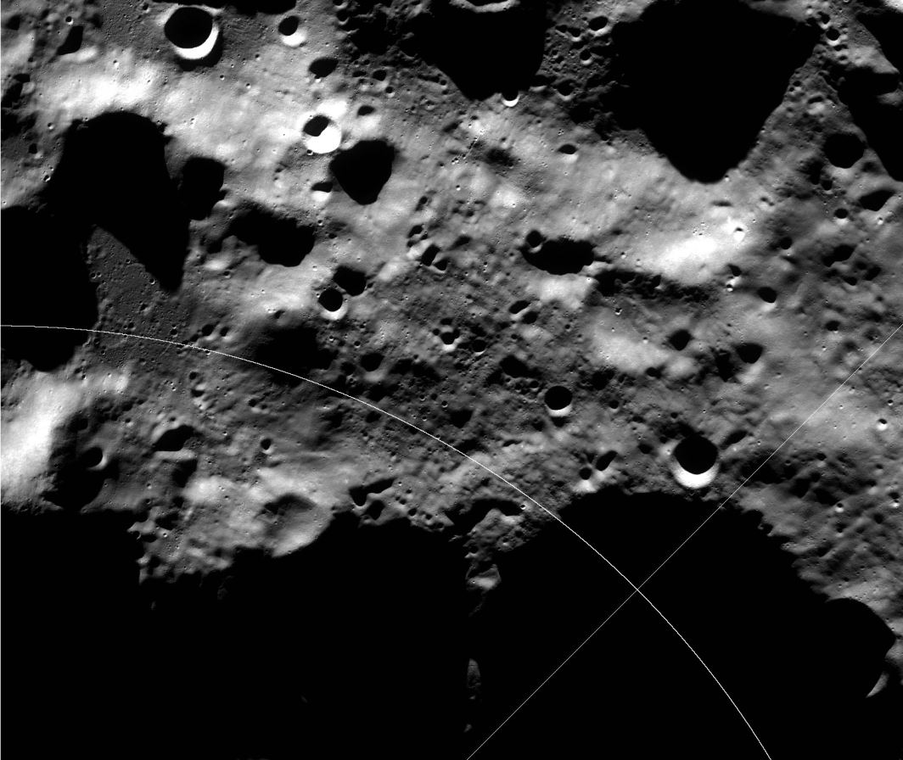

Artemis is NASA's program to return humans to the Moon — for good this time. Named after the Greek goddess of the Moon and the hunt, twin sister of Apollo, it was announced by NASA Administrator Jim Bridenstine on 16 May 2019. It has already flown twice. And in 2026, the program changed course in a way that rewrote the roadmap.
The name
The choice of name is the most elegant part of the program. Apollo's twin sister, Artemis, goddess of the Moon — a sequel in name and in spirit. And where Apollo was personified by twelve men, Artemis was announced with a promise: the next humans on the Moon would include the first woman. (That promise's exact home in the new mission plan is still being written — see below.)
The machines
| Hardware | What it is | Key numbers |
|---|---|---|
| SLS Block 1 | The launch vehicle — four RS-25 engines + two five-segment solid boosters | 98 m tall · 39 MN liftoff thrust · 27 t to the Moon |
| Orion | The crew capsule, with the European Service Module for power and propulsion | 5.03 m diameter · 4 crew · built to go beyond the Moon |
| AxEMU spacesuit | Axiom Space's moonwalking suit (with Prada design input) | ISS demo planned 2027 · first lunar use on Artemis IV |
| Human landing systems | SpaceX Starship HLS and Blue Origin Blue Moon — NASA's pick for Artemis IV not yet made | Starship's first orbital flight: Flight 14, 28 Sep 2026 |

Artemis I — the uncrewed dress rehearsal
16 November – 11 December 2022: the first SLS launch sent an uncrewed Orion around the Moon and back — 25 days, 10 hours, 53 minutes, out to 268,563 miles from Earth. The mission was a success, with one important finding: Orion's heat shield eroded more than expected during re-entry, which NASA studied and addressed before the next flight.

Artemis II — humans around the Moon again
1–11 April 2026: the first crewed flight of the program — and the first humans beyond low Earth orbit since Apollo 17. Commander Reid Wiseman, pilot Victor Glover, and mission specialists Christina Koch and Jeremy Hansen (the first non-American on a lunar mission, from the Canadian Space Agency) flew a free-return trajectory around the Moon: 9 days, 1 hour, 32 minutes, passing within 6,545 km of the far side, and reaching 406,771 km from Earth — farther than any humans before them, beyond Apollo 13's record. Minor issues (a water and toilet glitch, a helium leak) were managed, and the crew splashed down safely on 11 April (00:07 UTC).

The 2026 restructuring — the plan changed
Three big changes: Artemis III is no longer the landing. It became a low-Earth-orbit demonstration mission. Artemis IV became the first crewed landing, targeted for early 2028. And on 24 March 2026, NASA announced it would pause the Gateway lunar station "in its current form", prioritising a surface base instead — its hardware being repurposed. The SLS Block 1B and Block 2 upgrades were cancelled.
| Mission | Date | What it is |
|---|---|---|
| Artemis I | 16 Nov–11 Dec 2022 | Uncrewed test flight around the Moon |
| Artemis II | 1–11 Apr 2026 | First crewed flight: 4 astronauts around the Moon |
| Artemis III | Target 2027 | Low-Earth-orbit demonstration — crew: Bresnik, Parmitano, Rubio, Douglas (announced 9 Jun 2026), docking with a Blue Moon-derived test vehicle and a Starship test article |
| Artemis IV | Early 2028 | The first crewed landing: four launch, two descend to the surface for about a week |
| Artemis V | Late 2028 | Second landing; base-building begins |
For years, NASA's promise was that Artemis III would land the first woman and the first person of colour on the Moon. With the landing moved to Artemis IV, NASA has not yet announced that mission's crew — so the promise's place in the new roadmap is still open. The Artemis III crew named in June 2026 (an all-male crew) drew criticism for exactly this reason.
Why the south pole?
Artemis is not going back to the Moon's equator — it is going to the lunar south pole, and for hard practical reasons:
- Water ice — the floors of craters near the pole are permanently shadowed: sunlight never reaches them, so water ice delivered by comets has stayed frozen for billions of years. The LCROSS impact mission measured about 5% water in the Cabeus crater. Ice is drinking water, oxygen and rocket fuel — the supply chain of a permanent base.
- Almost-permanent sunlight — paradoxically, a few kilometres away, some ridges are almost never in shadow: the Connecting Ridge between the Shackleton and de Gerlache craters is sunlit 92–96% of the time. Solar power, almost continuously.
- Science — the ancient, cold surfaces of the south pole may hold the Solar System's oldest accessible material — and the region is a candidate site for future radio telescopes shielded from Earth's noise.

What still has to happen
The path to the landing runs through hardware that is still being proven. SpaceX's Starship reached orbit for the first time on 28 September 2026 (Flight 14 — the flight ended early after a premature engine shutdown, but the milestone stood). The critical remaining test for the Moon: orbital refuelling — ship-to-ship propellant transfer, targeted for early 2027, followed by an uncrewed lunar landing late 2027. NASA has not yet chosen between Starship HLS and Blue Origin's Blue Moon for Artemis IV's landing. And the AxEMU spacesuit must first be demonstrated on the International Space Station, planned for 2027.
If all of that comes together, the early months of 2028 will see something the world has waited for since December 1972: humans walking on the Moon — at the south pole this time, in suits with Italian design input, standing in frozen shadows and almost-permanent sunlight.
← Back to Space chapter